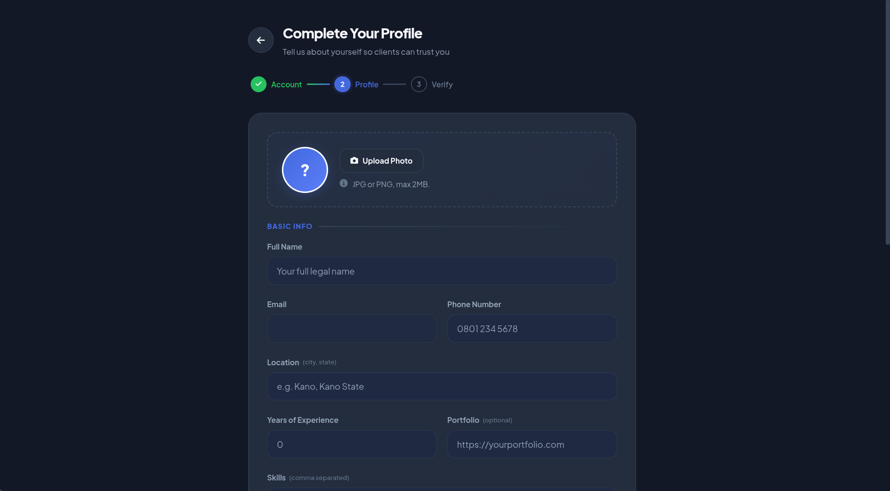
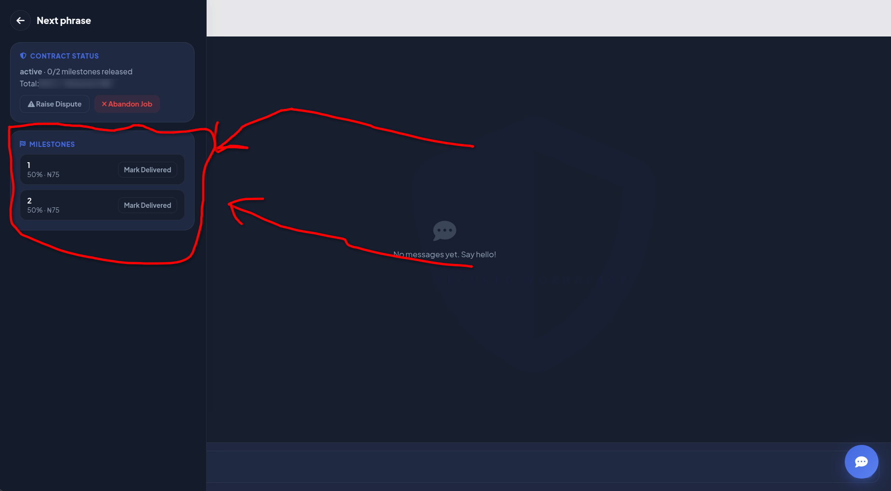
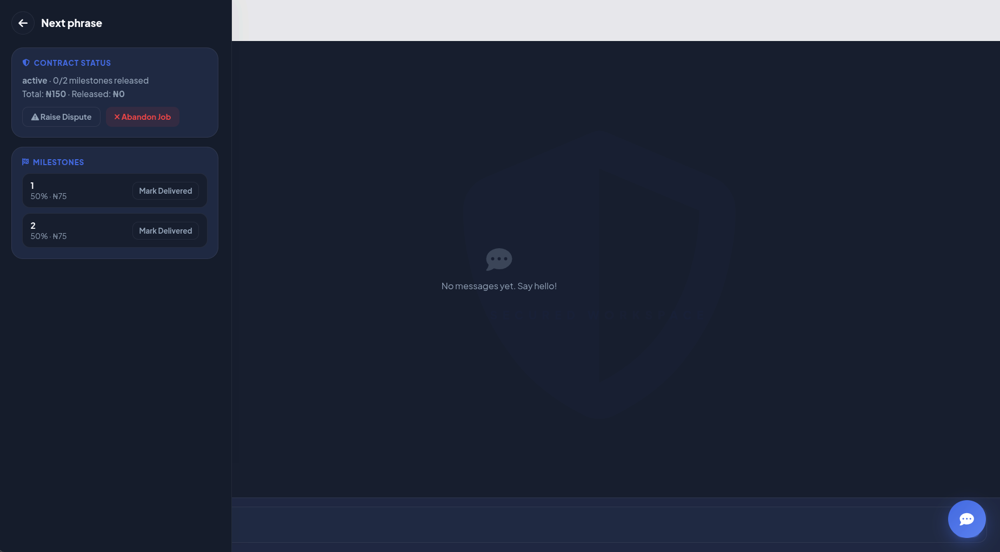
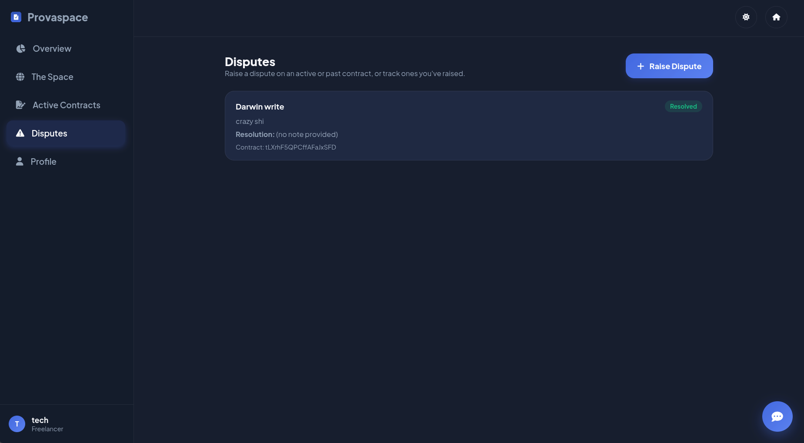
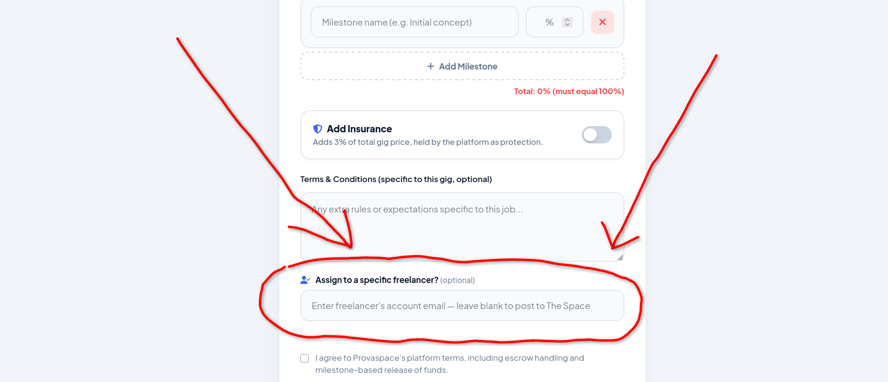

Tax Pass
ClientsTax Pass is what a client buys to unlock the ability to post gigs on Provaspace. Without it, you can browse the platform but you can't put work out into the Space. Think of it as your client-side operating licence.
It's not a per-gig charge — you buy a Tax Pass once per tier and it covers a set number of gig posts. When you run out, you buy again.
WHAT IT COVERS
Each tier gives you a fixed number of gig slots. Higher tier = more gigs you can post before renewing.
PRICING
Tiers and prices are set by the admin — check the Tax Pass card on your client dashboard for the current options.

Rent
FreelancersRent is the freelancer's recurring subscription to the Space. It keeps your profile active and your ability to claim gigs alive. No active rent = no access to The Space.
You pick a plan that suits how often you work — weekly, monthly, or yearly. Yearly is the cheapest per day; weekly is the most flexible if you're testing the waters.
PLANS
Weekly, Monthly, Yearly — prices set by admin. Check your dashboard Rent card for current rates.
GRACE PERIOD
When rent expires, you get a grace period before you're blocked. After that, an overdue fee kicks in and your account is suspended until you pay.

Silver Surfer
Silver Surfer is the Space's built-in AI support assistant — always on, always ready. It lives in the bottom-right corner of your dashboard as a floating button.
It can answer questions about the platform, help you figure out how things work, and if it can't solve your problem, it logs a support ticket automatically so admin can follow up. You get both the assistant and a ticket in one tap.

The Silver Surfer button — bottom-right corner of your dashboard.

Chat with Silver Surfer and your support ticket is created at the same time.
Insurance & Assurance
These are two separate but related things — insurance is what a client adds to a gig when posting it, and assurance is what happens when something goes wrong on any contract.
INSURANCE (CLIENT SIDE)
When posting a gig, a client can opt into insurance. This adds a fee on top of the deposit — held by the platform as extra protection for the job.
ASSURANCE (FREELANCER SIDE)
When a freelancer claims an insured gig, they pay a flat assurance fee before the contract is created. This fee is set by admin and held for the contract duration.

Trust Score
Trust Score is a number between 0 and 100 that shows how reliable you've been on the platform. Every account starts at 100. It goes down when things go wrong — and admin can adjust it directly.
WHAT LOWERS IT
Abandoning an active contract deducts 15 points. Disputes resolved against you may also lead to a reduction. Admin can also manually adjust your score.
HOW IT'S USED
Gigs in The Space are sorted by Trust Score — higher scores show up higher. Clients browsing freelancer profiles can see your score too.
Privacy Policy
Provaspace doesn't use your data for anything shady. The information you provide — your name, email, NIN, bank details, and gig history — is used only to operate the platform. It is not sold, shared with advertisers, or used to profile you outside of Provaspace.
Your bank details are stored to process withdrawal requests only. NIN details are submitted for admin verification and not exposed to other users. Your wallet balance and contract history are visible only to you and to admins.
Terms & Conditions
By using Provaspace you agree to operate honestly — completing work you claim, paying for services rendered, and not abusing the dispute system.
Full terms — to be defined and published by the Provaspace team.What Gets You Banned
A ban is the most serious action on the platform. It locks you out with a blocking overlay the moment you open your dashboard — you can't access anything until admin lifts it.
Bans are applied by admin, not automatically by the system. If you believe you've been banned unfairly, contact support — but note that appeals aren't guaranteed.

What Gets You Suspended
Suspension on Provaspace is almost always about rent. If you let your rent lapse past the grace period without paying, your account gets suspended. Your profile is still there — you just can't claim gigs or access the Space until the balance is cleared.
HOW TO FIX IT
Go to your dashboard, open the Rent card, and pay what's owed — including any overdue fee admin has set. Your access is restored immediately once payment goes through.
GRACE PERIOD
You get a buffer after your rent expires before suspension kicks in. Use that window to renew — the overdue fee only applies after the grace period ends.

What's the Space
The Space is the central marketplace — where freelancers come to find work and where clients come to post it. It's the beating heart of Provaspace.
FOR FREELANCERS
Browse open gigs, filter by category, and claim jobs that match your skills. Gigs are sorted by Trust Score — higher-rated freelancers see the best listings first.
FOR CLIENTS
Post gigs with a title, description, price, milestones, and optional insurance. Choose to post publicly to The Space or assign the gig directly to a specific freelancer.

Withdrawals & Minimum
When a client releases a milestone payment, it lands in your Provaspace wallet. From there you can request a withdrawal to your saved bank account.
- Make sure your bank name, account number, and account name are saved on your profile.
- Go to your dashboard and tap Withdraw on your wallet card.
- Enter the amount — up to your full wallet balance.
- Confirm. Your request goes to admin for review and is paid out via bank transfer.

Referrals
FreelancersReferrals are how you earn free rent on Provaspace. Share your referral link — when someone signs up through it, verifies their NIN, and completes their first gig, you get free rent days credited to your account.
- Go to your dashboard and find the Referral card.
- Copy your unique referral link and share it — with friends, on social, anywhere.
- They sign up via your link, verify their NIN, and complete their first gig.
- You get credited with free rent days. Your rent due date extends automatically.

Your Profile & NIN
FreelancersYour profile is more than just a display — it unlocks your ability to claim gigs. Certain fields must be filled before you can work on the platform.
REQUIRED TO CLAIM GIGS
Full name, email, phone, location, skills, bank account number, and a verified NIN. All must be present.
HOW NIN VERIFICATION WORKS
Submit your NIN number on your profile. Admin reviews it and marks it as verified. Until it's approved, you'll see "Unverified" on your profile and can't claim gigs.

Milestones & Escrow
When a client posts a gig, they break it into milestones — named stages of the work, each with a percentage of the total payment attached. Milestones are how money moves from client to freelancer.
HOW MILESTONES WORK
Freelancer marks a milestone as delivered. Client reviews the work and taps Release Payment. The money goes to the freelancer's wallet instantly.
WHAT IS ESCROW
Escrow is money held by the platform on behalf of both parties. The client's deposit goes into escrow when the gig is posted. Milestone payments are released from escrow — not directly from the client's bank each time.

Contracts & How Jobs Work
A contract is created the moment a freelancer claims a gig (or a client directly assigns one). It's the living record of the job — milestones, payments, messages, and status all in one place.
- Client posts a gig — sets title, description, price, milestones, deposit, and optional insurance.
- Freelancer claims it — from The Space (or is directly assigned). A contract is created immediately.
- Work happens — both sides communicate via the in-contract chat. Freelancer marks milestones as delivered.
- Client releases payment — taps Release Payment on each delivered milestone. Money goes to freelancer's wallet.
- Contract completes — when all milestones are released, the contract is marked complete.

Disputes
If something goes wrong on a contract — client won't pay, freelancer disappeared, work was unsatisfactory — either side can raise a dispute. Admin reviews it and decides on a resolution.
HOW TO RAISE ONE
Go to the Disputes page from your dashboard sidebar. Click Raise a Dispute, select the contract it's about, describe the problem. It's submitted to admin immediately.
WHAT ADMIN DOES
Admin reviews both sides, looks at contract history, chat logs, and escrow balance, then writes a resolution. Funds held in escrow can be redistributed based on the outcome.

Direct Hire
ClientsInstead of posting a gig to The Space for any freelancer to claim, you can assign it directly to a specific freelancer. This bypasses the open marketplace entirely — the contract is created immediately and shows up in both your dashboards as active.
- Go to Post Gig and fill in all the usual details — price, milestones, deposit, etc.
- At the bottom of the form, enter the freelancer's Provaspace email in the Assign to a specific freelancer field.
- Wait for the lookup to confirm their account (it searches as you type — green tick means found).
- Submit. Payment goes through Paystack, the gig is created as claimed, and the contract goes live. The freelancer gets a notification.
- You can also achieve this easily by going to the space as a client and finding the specific feelancer, click assign gig on his/her card and the email field in post-gig automatically updates

A Hope for What's Next
Provaspace keeps shipping. The platform you're using today is just the start — more features, better tooling, and a bigger community are on the way. Stay active, build your Trust Score, and keep an eye on the Space.
— Provaspace